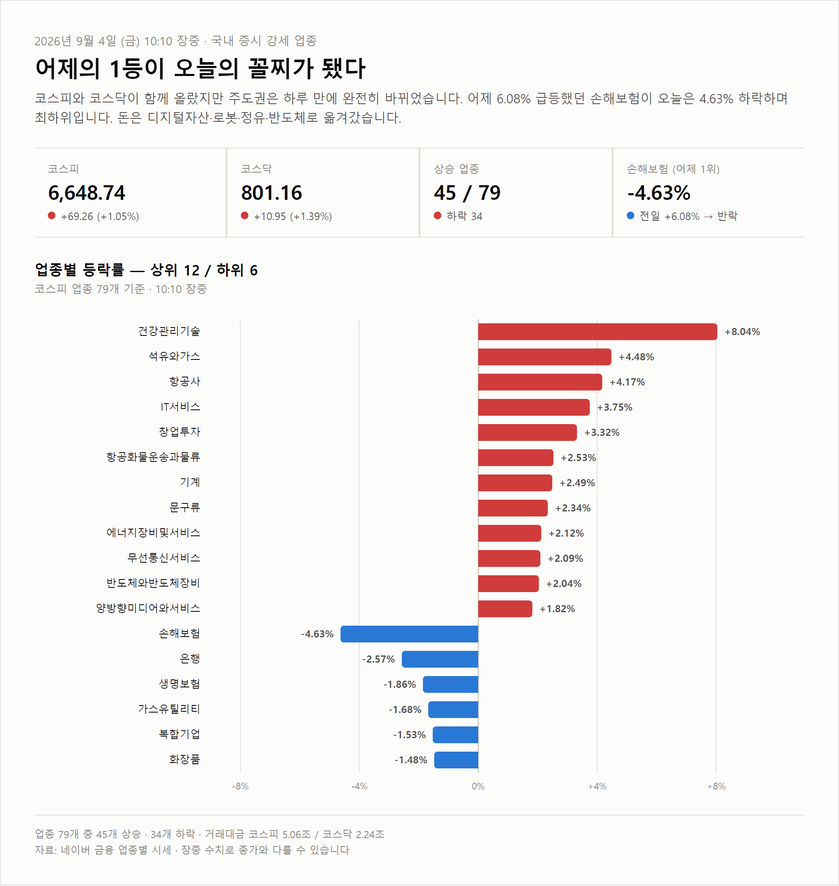
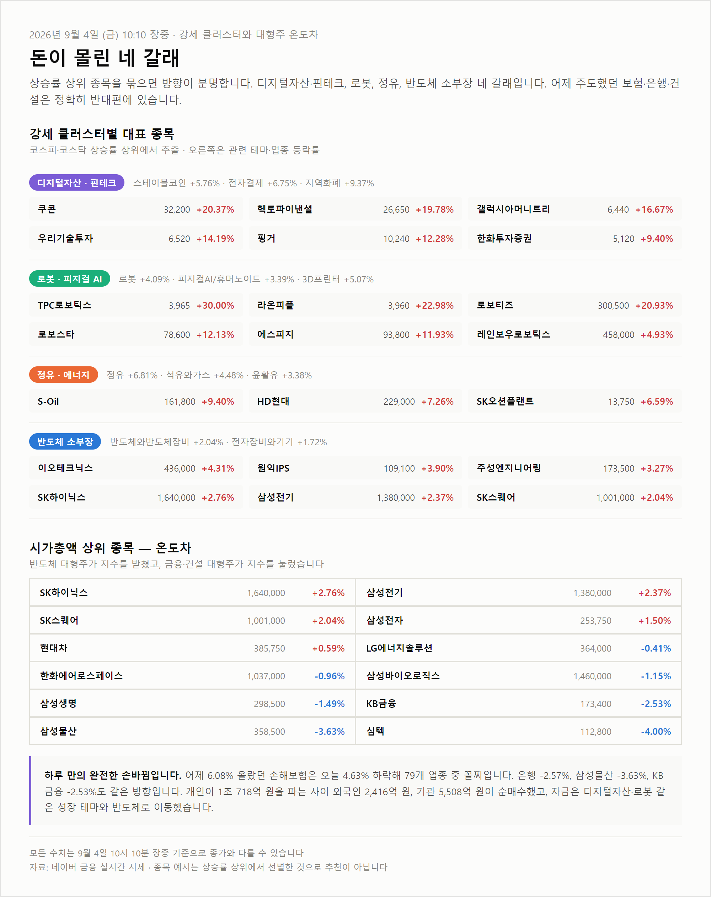

<meta charset="utf-8">
<title>2026-09-04 강세 테마 정리 — 야간비행 일지</title>
<meta name="description" content="2026년 9월 4일 장중 강세 업종·테마 정리. 어제 1위 손해보험이 오늘 꼴찌가 된 순환매, 디지털자산·로봇·정유·반도체 네 갈래로 이동한 자금을 정리했습니다.">
<meta name="viewport" content="width=device-width, initial-scale=1">
<link rel="canonical" href="https://danielmoon82.github.io/moon/posts/theme-2026-09-04.html">
<link rel="preconnect" href="https://fonts.googleapis.com">
<link rel="preconnect" href="https://fonts.gstatic.com" crossorigin>
<link rel="stylesheet" href="https://fonts.googleapis.com/css2?family=Hahmlet:wght@400;600;800&family=IBM+Plex+Mono:wght@400;500&family=IBM+Plex+Sans+KR:wght@300;400;500;600&display=swap">

<style>
  :root{
    --paper:#E7EBF1;--surface:#F4F6FA;--surface-2:#DCE2EC;
    --ink:#0F1729;--ink-2:#3D4A63;--ink-3:#6B7891;
    --line:#C6CEDB;--line-soft:#D6DCE6;--accent:#B06A15;--accent-bright:#C2761A;
    --up:#E5484D;--down:#3B82F6;
    --f-display:"Hahmlet",'Nanum Myeongjo',"Apple SD Gothic Neo",serif;
    --f-body:"IBM Plex Sans KR","Apple SD Gothic Neo","Malgun Gothic",sans-serif;
    --f-mono:"IBM Plex Mono","SFMono-Regular",Consolas,monospace;
    --pad:clamp(20px,5vw,64px);
  }
  @media (prefers-color-scheme:dark){
    :root:not([data-theme="light"]){
      --paper:#0B1120;--surface:#121A2C;--surface-2:#1A2439;
      --ink:#E9EEF7;--ink-2:#A9B5C9;--ink-3:#72809A;
      --line:#26314A;--line-soft:#1D2739;--accent:#E8A33D;--accent-bright:#F0B45C;
    }
  }
  *{box-sizing:border-box;}
  body{margin:0;background:var(--paper);color:var(--ink);font-family:var(--f-body);
    font-weight:300;font-size:16px;line-height:1.75;-webkit-font-smoothing:antialiased;}
  a{color:inherit;}
  img{max-width:100%;height:auto;}
  .wrap{max-width:760px;margin:0 auto;padding-inline:var(--pad);}
  .nav{position:sticky;top:0;z-index:20;background:color-mix(in srgb,var(--paper) 88%,transparent);
    backdrop-filter:saturate(180%) blur(12px);border-bottom:1px solid var(--line);}
  .nav-in{display:flex;align-items:center;justify-content:space-between;height:58px;}
  .brand{font-family:var(--f-display);font-weight:600;font-size:1rem;letter-spacing:-.02em;text-decoration:none;}
  .back{font-family:var(--f-mono);font-size:.72rem;color:var(--ink-3);text-decoration:none;}
  .article{padding-block:clamp(40px,7vw,72px) clamp(56px,9vw,96px);}
  .eyebrow{font-family:var(--f-mono);font-size:.68rem;letter-spacing:.16em;text-transform:uppercase;
    color:var(--accent);margin:0 0 14px;}
  h1{font-family:var(--f-display);font-weight:800;font-size:clamp(1.6rem,4.4vw,2.3rem);
    line-height:1.3;letter-spacing:-.03em;margin:0 0 16px;}
  .byline{font-family:var(--f-mono);font-size:.72rem;color:var(--ink-3);
    padding-bottom:24px;border-bottom:1px solid var(--line);margin-bottom:32px;}
  .lede{font-size:1.02rem;color:var(--ink-2);margin:0 0 28px;}
  h2{font-family:var(--f-display);font-weight:600;font-size:1.25rem;letter-spacing:-.02em;margin:42px 0 14px;}
  h3{font-family:var(--f-display);font-weight:600;font-size:1.05rem;letter-spacing:-.02em;
    margin:30px 0 10px;padding-top:14px;border-top:1px solid var(--line-soft);}
  p{margin:0 0 18px;color:var(--ink-2);}
  ul.checks{margin:0 0 18px;padding-left:20px;color:var(--ink-2);}
  ul.checks li{margin-bottom:10px;font-size:.94rem;}
  table{width:100%;border-collapse:collapse;font-size:.88rem;margin-bottom:8px;}
  th{font-family:var(--f-mono);font-size:.66rem;letter-spacing:.06em;text-transform:uppercase;
    color:var(--ink-3);text-align:right;padding:8px 6px;border-bottom:1px solid var(--line);}
  th:first-child{text-align:left;}
  td{padding:10px 6px;border-bottom:1px solid var(--line-soft);color:var(--ink-2);}
  td.num{font-family:var(--f-mono);text-align:right;font-variant-numeric:tabular-nums;}
  td.up{color:var(--up);} td.down{color:var(--down);}
  .scroll{overflow-x:auto;}
  figure{margin:26px 0;}
  figure img{display:block;border-radius:3px;background:var(--surface-2);}
  figcaption{margin-top:8px;font-family:var(--f-mono);font-size:.68rem;color:var(--ink-3);text-align:center;}
  .note{margin-top:34px;padding:16px 18px;border-left:3px solid var(--accent);
    background:var(--surface);border-radius:0 3px 3px 0;}
  .note p{margin:0;font-size:.85rem;color:var(--ink-3);}
  .foot{border-top:1px solid var(--line);background:var(--surface);padding-block:30px 38px;}
  .foot p{margin:0;font-size:.8rem;color:var(--ink-3);}
</style>

<nav class="nav">
  <div class="wrap nav-in">
    <a class="brand" href="../index.html">야간비행 일지</a>
    <a class="back" href="../index.html#stocks">← 시황으로</a>
  </div>
</nav>

<main class="wrap article">
  <p class="eyebrow">Market · Theme</p>
  <h1>어제 1위 손해보험이 오늘 꼴찌 — 돈은 디지털자산·로봇·정유·반도체로 갔다</h1>
  <p class="byline">2026-09-04 (금) 10:10 장중 기준 · 코스피 업종 79개 · 네이버 금융</p>

  <p class="lede">코스피와 코스닥이 함께 올랐지만 주도권은 하루 만에 완전히 바뀌었습니다. 어제 6.08% 급등하며 업종 1위였던 손해보험이 오늘은 4.63% 하락해 79개 업종 중 꼴찌입니다. 자금은 디지털자산·핀테크, 로봇, 정유, 반도체 소부장 네 갈래로 이동했습니다.</p>

  <h2>지금 시장 상황</h2>
  <p>9월 4일 오전 10시 10분 기준 코스피는 전일 대비 69.26포인트(1.05%) 오른 6,648.74입니다. 장중 고점은 6,682.61, 저점은 6,645.72였습니다. 코스닥은 10.95포인트(1.39%) 오른 801.16으로 코스피보다 강합니다.</p>
  <p>어제와 정반대 구도입니다. 9월 3일에는 코스피가 1.44% 오르는 동안 코스닥이 0.02%에 머물렀습니다. 오늘은 코스닥이 앞섭니다. 등락 종목 수를 보면 더 분명합니다. 코스피는 상승 449종목에 하락 397종목으로 팽팽하지만, 코스닥은 상승 1,035종목에 하락 591종목으로 상승이 압도적입니다.</p>
  <p>수급도 뚜렷합니다. 개인이 1조 718억 원을 순매도하는 동안 외국인이 2,416억 원, 기관이 5,508억 원을 순매수했습니다. 프로그램 매매는 차익 1,023억 원, 비차익 967억 원으로 합계 1,990억 원 순매수입니다. 거래대금은 코스피 5조 560억 원, 코스닥 2조 2,390억 원입니다.</p>

  <figure>
    
    <figcaption>업종별 등락률 · 상위 12 / 하위 6 · 10:10 장중</figcaption>
  </figure>

  <h2>강세 업종 — 어제의 1등이 오늘의 꼴찌</h2>
  <p>코스피 업종 79개 가운데 45개가 오르고 34개가 내렸습니다. 상위권은 건강관리기술 8.04%, 석유와가스 4.48%, 항공사 4.17%, IT서비스 3.75%, 창업투자 3.32%, 항공화물운송과물류 2.53%, 기계 2.49%, 문구류 2.34%, 에너지장비및서비스 2.12%, 무선통신서비스 2.09%, 반도체와반도체장비 2.04%, 양방향미디어와서비스 1.82% 순입니다.</p>
  <p>문제는 하위권입니다. 손해보험이 -4.63%로 꼴찌이고 은행 -2.57%, 생명보험 -1.86%, 가스유틸리티 -1.68%, 복합기업 -1.53%, 화장품 -1.48%가 뒤를 잇습니다.</p>

  <div class="scroll">
    <table>
      <thead><tr><th>업종</th><th>9월 3일</th><th>9월 4일 (10:10)</th></tr></thead>
      <tbody>
        <tr><td>손해보험</td><td class="num up">+6.08%</td><td class="num down">-4.63%</td></tr>
        <tr><td>생명보험</td><td class="num up">+4.62%</td><td class="num down">-1.86%</td></tr>
        <tr><td>은행</td><td class="num up">+3.87%</td><td class="num down">-2.57%</td></tr>
        <tr><td>석유와가스</td><td class="num down">S-Oil -1.99%</td><td class="num up">+4.48%</td></tr>
        <tr><td>반도체와반도체장비</td><td class="num down">전자장비와기기 -2.01%</td><td class="num up">+2.04%</td></tr>
      </tbody>
    </table>
  </div>
  <p>어제 이 자리에서 “금리에 연동된 금융주는 금리 방향이 바뀌면 논리가 함께 흔들린다”고 적었는데, 그 확인이 하루 만에 왔습니다. 어제 5.22% 올랐던 건설도 오늘은 대표주 삼성물산이 3.63% 하락 중입니다.</p>

  <h2>돈이 몰린 네 갈래</h2>

  <h3>1. 디지털자산 · 핀테크</h3>
  <p>오늘 가장 넓고 강한 흐름입니다. 테마별로 지역화폐 9.37%, 전자결제 6.75%, 스테이블코인 5.76%, STO(토큰증권 발행) 4.85%, 마이데이터 4.72%, 가상화폐 4.61%, NFT 4.04%, 핀테크 3.81%가 모두 올랐습니다. 여덟 개 테마가 한 방향입니다.</p>
  <p>개별 종목으로는 쿠콘 20.37%, 헥토파이낸셜 19.78%, 갤럭시아머니트리 16.67%, 우리기술투자 14.19%, 핑거 12.28%이며, 코스피에서도 한화투자증권이 9.40% 올랐습니다. 업종 분류로는 IT서비스 3.75%와 창업투자 3.32%에 해당합니다.</p>

  <h3>2. 로봇 · 피지컬 AI</h3>
  <p>로봇 테마 4.09%, 피지컬 AI/휴머노이드 로봇 3.39%, 지능형로봇·인공지능 2.94%, 3D 프린터 5.07%입니다. TPC로보틱스가 30.00%로 상한가에 도달했고 라온피플 22.98%, 로보티즈 20.93%, 로보스타 12.13%, 에스피지 11.93%가 뒤를 이었습니다. 코스닥 시총 상위인 레인보우로보틱스도 4.93% 올랐습니다.</p>
  <p>코스피에서는 ACE K휴머노이드로봇산업TOP2+ ETF가 8.36%, TIGER 코리아휴머노이드로봇산업 ETF가 7.76% 상승했습니다. ETF까지 함께 오른다는 것은 개별 종목 재료가 아니라 테마 전체에 자금이 들어왔다는 뜻입니다.</p>

  <h3>3. 정유 · 에너지</h3>
  <p>어제 하루 쉬었다가 다시 올라왔습니다. 정유 테마 6.81%, 윤활유 3.38%, LPG 3.00%이고 업종 기준 석유와가스는 4.48%입니다. S-Oil이 9.40% 오른 161,800원인데, 어제 1.99% 하락했던 종목입니다. HD현대도 7.26% 올랐습니다.</p>

  <h3>4. 반도체 소부장</h3>
  <p>지수를 실제로 받친 쪽입니다. SK하이닉스 2.76%, 삼성전기 2.37%, SK스퀘어 2.04%, 삼성전자 1.50%입니다. 코스닥에서는 이오테크닉스 4.31%, 원익IPS 3.90%, 주성엔지니어링 3.27%가 올랐습니다.</p>

  <figure>
    
    <figcaption>강세 클러스터 4갈래와 시가총액 상위 종목의 온도차</figcaption>
  </figure>

  <h2>업종 1위 건강관리기술은 다르게 봐야 합니다</h2>
  <p>업종 1위인 건강관리기술 8.04%는 앞의 네 갈래와 성격이 다릅니다. 구성종목을 열어보면 오늘 코스닥에 신규 상장한 스카이랩스가 71.70% 급등해 있습니다. 인피니트헬스케어, 뉴로핏, 루닛, 뷰노, 제이엘케이 같은 나머지 종목도 함께 오르긴 했지만, 8.04%의 상당 부분은 상장 첫날 종목 하나가 만든 숫자입니다. ‘2026 하반기 신규상장’ 테마가 7.61%로 테마 2위에 오른 것도 같은 이유입니다.</p>
  <p>같은 기준으로 보면 오늘 가장 폭이 넓은 흐름은 로봇입니다. 로봇 테마는 상승 66종목에 하락 4종목입니다. 스테이블코인은 상승 23종목에 하락 2종목, 핀테크는 상승 30종목에 하락 3종목입니다. 소수 종목이 아니라 테마 전반이 함께 움직였다는 뜻입니다.</p>

  <h2>대형주와의 온도차</h2>
  <div class="scroll">
    <table>
      <thead><tr><th>종목</th><th>현재가</th><th>등락률</th></tr></thead>
      <tbody>
        <tr><td>SK하이닉스</td><td class="num">1,640,000원</td><td class="num up">+2.76%</td></tr>
        <tr><td>삼성전기</td><td class="num">1,380,000원</td><td class="num up">+2.37%</td></tr>
        <tr><td>SK스퀘어</td><td class="num">1,001,000원</td><td class="num up">+2.04%</td></tr>
        <tr><td>삼성전자</td><td class="num">253,750원</td><td class="num up">+1.50%</td></tr>
        <tr><td>현대차</td><td class="num">385,750원</td><td class="num up">+0.59%</td></tr>
        <tr><td>LG에너지솔루션</td><td class="num">364,000원</td><td class="num down">-0.41%</td></tr>
        <tr><td>삼성바이오로직스</td><td class="num">1,460,000원</td><td class="num down">-1.15%</td></tr>
        <tr><td>KB금융</td><td class="num">173,400원</td><td class="num down">-2.53%</td></tr>
        <tr><td>삼성물산</td><td class="num">358,500원</td><td class="num down">-3.63%</td></tr>
      </tbody>
    </table>
  </div>
  <p>어제는 LG에너지솔루션 4.75%, POSCO홀딩스 4.09%가 지수를 밀어올리고 삼성전자·SK하이닉스가 1% 안팎에 그쳤습니다. 오늘은 반대로 반도체 대형주가 지수를 받치고, 어제 강했던 금융·건설 대형주가 지수를 누르고 있습니다. 코스닥에서도 심텍 -4.00%, HPSP -2.09%와 로보티즈 +20.93%가 정반대로 갈렸습니다.</p>

  <h2>주의해서 볼 점 네 가지</h2>
  <ul class="checks">
    <li><strong>순환매의 속도.</strong> 9월 2일 유가·정유, 9월 3일 보험·은행·조선, 오늘 디지털자산·로봇입니다. 사흘 연속 주도 테마가 바뀌었고 전날 1위가 다음 날 꼴찌가 됐습니다. 전날 상승률만 보고 따라 들어가면 고점을 잡을 확률이 높아집니다.</li>
    <li><strong>급등 폭.</strong> TPC로보틱스 30.00%, KS인더스트리 29.93%, 서울식품우 29.86%처럼 상한가 부근 종목이 여럿입니다. 테마 평균이 4% 안팎인데 개별 종목이 30% 오른다면 실적보다 수급이 만든 움직임일 가능성이 큽니다.</li>
    <li><strong>신규 상장주.</strong> 스카이랩스는 오늘 상장한 종목입니다. 상장 첫날 등락률은 다른 종목과 같은 의미를 갖지 않습니다.</li>
    <li><strong>금융주 반락의 이유.</strong> 어제 금리 상승을 근거로 올랐던 보험·은행이 급락했습니다. 국고채 금리가 실제로 방향을 바꿨는지, 어제 급등에 따른 차익 실현인지는 마감 이후 확정 수치로 판단하는 편이 정확합니다.</li>
  </ul>

  <div class="note">
    <p>업종 등락률은 네이버 금융 업종별 시세(코스피 79개), 테마 등락률은 같은 사이트 테마별 시세 기준입니다. 모든 수치는 2026년 9월 4일 오전 10시 10분 장중 기준으로 종가와 다를 수 있습니다. 언급된 종목은 상승률·시가총액 상위에서 선별한 사례이며 매수·매도를 권유하지 않습니다. 강세 원인에 대한 설명은 필자의 해석입니다.</p>
  </div>
</main>

<footer class="foot">
  <div class="wrap"><p>야간비행 일지 · 마감 시황은 장 종료 후 자동 갱신됩니다.</p></div>
</footer>
